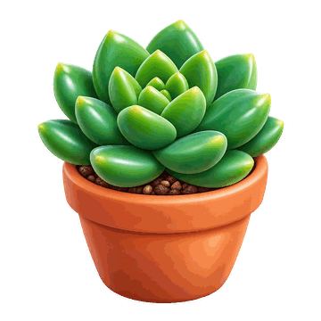
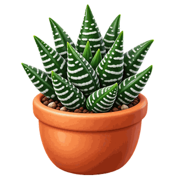
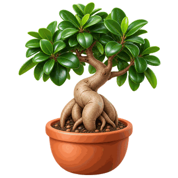
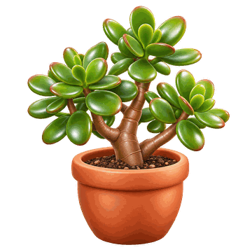
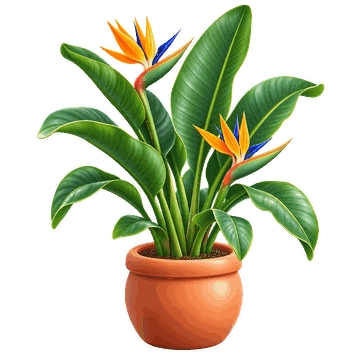
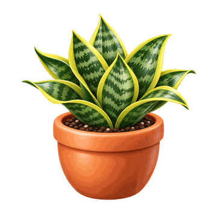
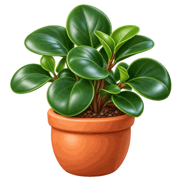
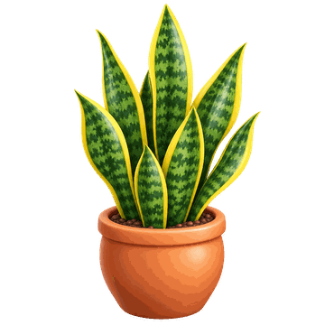
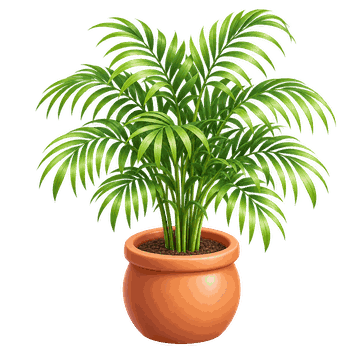

קטלוג צמחים
בקטלוג מופיעים הצמחים שאנחנו ממליצים עליהם, מחולקים לפי כמות האור בחדר. לכל צמח מופיעים הגודל, תדירות ההשקיה ומה מיוחד בו.
קפיצה ישירה לקבוצה: חדר מואר | אור בינוני | חדר מוצל
| תמונה | שם הצמח | גודל | השקיה | מה מיוחד בו |
|---|---|---|---|---|
| צמחים לחדר מואר | ||||
 |
סוקולנט | קטן | מעט מאוד, רק כשהאדמה יבשה לגמרי | אוגר מים ברקמות העבות שלו |
 |
הוורתיה | קטן | מעט, כשהאדמה יבשה | סוקולנט קטן שמסתדר גם עם אור עקיף |
 |
אלוורה | בינוני | מעט מאוד, רק כשהאדמה יבשה לגמרי | עלים בשרניים שאוגרים מים |
 |
פיקוס ג'ינסנג | בינוני | כשהשכבה העליונה של האדמה יבשה | גזע עבה ומעוצב, אוהב אור רב |
 |
עץ הכסף (קרסולה) | גדול | מעט, כשהאדמה יבשה | סוקולנט שיכול לגדול לגודל של שיח |
 |
סטרליציה (ציפור גן עדן) | גדול | באופן סדיר, כשהאדמה מתחילה להתייבש | עלים גדולים, זקוק להרבה אור |
| צמחים לאור בינוני | ||||
 |
סנסיווירה ננסית | קטן | מעט, כשהאדמה יבשה | עמידה מאוד ודורשת מעט טיפול |
 |
פפרומיה | בינוני | כשהאדמה יבשה למחצה | צמח קומפקטי עם עלים עבים |
 |
מונסטרה דליציוזה | גדול | כשהשכבה העליונה של האדמה יבשה | עלים גדולים ומחורצים, צמח מרשים |
| צמחים לחדר מוצל | ||||
 |
צמח הנחש | קטן | מעט, כשהאדמה יבשה לגמרי | מסתדר גם עם מעט מאוד אור |
 |
שושנת השלום | בינוני | באופן סדיר, אדמה לחה אך לא רטובה | העלים נובלים כשהוא צמא ומתאוששים אחרי השקיה |
 |
דקל חמד | גדול | כשהשכבה העליונה של האדמה יבשה | דקל ביתי שמסתדר עם אור מועט |